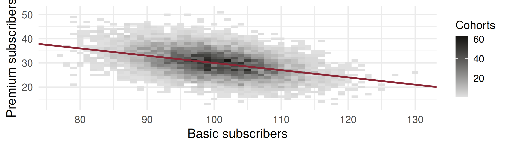

Code
cov_basic_premium theory sd_revenue theory
-15.6 -15.0 125.1 123.4 The Multinomial Probability Distribution
ADA University, School of Business
Information Communication Technologies Agency, Statistics Unit
2026-09-24
By the end of this lecture, you will be able to:
Recognise a multinomial experiment from the five properties of Definition 5.11
Evaluate the multinomial probability function for a given set of cell counts
State Theorem 5.13: the mean, variance and covariance of the cell counts
Explain why every covariance between two cells is negative
Combine Theorem 5.13 with Theorem 5.12 to find the mean and variance of a revenue total
Wackerly §5.9 · Quiz II is behind us.
Wednesday ended on Theorem 5.12: the variance of \(\sum a_i Y_i\) is every weight applied to a variance and to a covariance. Portfolio risk lives in those cross terms.
Today, one distribution in which every cross term is known in advance, from the design of the experiment alone. The binomial counted two outcomes per trial; the multinomial counts \(k\).
A rating review ends in up, stable, down or default, not in two classes. How are the counts distributed, and how do they move together?
Definition 5.11
With \(k = 2\) this is exactly the binomial experiment of Chapter 3.
Definition 5.12
\(Y_1, \ldots, Y_k\) have a multinomial distribution with parameters \(n\) and \(p_1, \ldots, p_k\) if \[p(y_1, \ldots, y_k) = \frac{n!}{y_1!\,y_2! \cdots y_k!}\; p_1^{y_1} p_2^{y_2} \cdots p_k^{y_k},\] where each \(y_i = 0, 1, \ldots, n\) and \(\sum_{i=1}^{k} y_i = n\).
It is Chapter 2 in two factors: one ordered sequence with these counts has probability \(p_1^{y_1} \cdots p_k^{y_k}\), and the coefficient is the number of ways to partition \(n\) trials into groups of sizes \(y_1, \ldots, y_k\).
A bank’s loan book holds 8 firms rated BB. Over one year each firm, independently, is upgraded (0.10), stays stable (0.75), is downgraded (0.12) or defaults (0.03). Find the probability of 1 upgrade, 6 stable, 1 downgrade and no default.
\[p(1, 6, 1, 0) = \frac{8!}{1!\,6!\,1!\,0!}\,(0.10)^1 (0.75)^6 (0.12)^1 (0.03)^0 = 56 \times 0.10 \times 0.17798 \times 0.12 = 0.1196\]
Even the single most likely year, \((0, 7, 1, 0)\), has probability only 0.1281: with four cells, probability is spread over 165 possible outcomes.
Theorem 5.13
If \(Y_1, \ldots, Y_k\) have a multinomial distribution with parameters \(n\) and \(p_1, \ldots, p_k\), then
Part 1. Merge every cell except \(i\) into one: each trial lands in cell \(i\) or not, so \(Y_i\) is binomial \((n, p_i)\).
Part 2. On a single trial, landing in cell \(s\) rules out cell \(t\), so the two indicators have covariance \(0 - p_sp_t\). Different trials are independent, and Theorem 5.12 adds the \(n\) same-trial terms: \(-np_sp_t\).
A Baku mobile operator signs 200 new subscribers. Each independently picks Basic (10 AZN a month, \(p_1 = 0.50\)), Standard (20 AZN, \(p_2 = 0.35\)) or Premium (35 AZN, \(p_3 = 0.15\)).
| Basic | Standard | Premium | |
|---|---|---|---|
| \(E(Y_i) = np_i\) | 100 | 70 | 30 |
| \(V(Y_i) = np_iq_i\) | 50 | 45.5 | 25.5 |
\(\text{Cov}(Y_1, Y_2) = -35\), \(\ \text{Cov}(Y_1, Y_3) = -15\), \(\ \text{Cov}(Y_2, Y_3) = -10.5\).
Revenue is \(R = 10Y_1 + 20Y_2 + 35Y_3\) AZN.
\[E(R) = 10(100) + 20(70) + 35(30) = 3450 \text{ AZN}\]
\[\begin{aligned} V(R) &= 100(50) + 400(45.5) + 1225(25.5) \\ &\quad + 2\big[200(-35) + 350(-15) + 700(-10.5)\big] \end{aligned}\]
\(V(R) = 54\,437.5 - 39\,200 = 15\,237.5\), so the standard deviation is 123.4 AZN. Dropping the covariances would report 233.3 AZN: a subscriber who picks Premium is one who did not pick Basic.
cov_basic_premium theory sd_revenue theory
-15.6 -15.0 125.1 123.4 
Each tile is a count of cohorts; the red line is \(0.3(200 - y_1)\), the average Premium count given \(y_1\) Basic. Its slope is the negative covariance made visible.
A trader classifies each of 20 trading days on the Baku exchange as up (0.45), flat (0.20) or down (0.35), independently.
Four minutes, in pairs:
What is the probability of exactly 10 up, 4 flat and 6 down days?
Let \(D = Y_{\text{up}} - Y_{\text{down}}\). Find \(E(D)\) and \(V(D)\).
What is \(\text{Cov}(Y_{\text{up}}, Y_{\text{down}})\), and what does its sign say?
Twelve customers each choose Basic (0.50), Standard (0.35) or Premium (0.15), independently. What is \(\text{Cov}(Y_1, Y_2)\)?
Which of these is not a multinomial experiment?
| Statement | |
|---|---|
| Definition 5.12 | \(p(y_1, \ldots, y_k) = \dfrac{n!}{y_1! \cdots y_k!}\,p_1^{y_1} \cdots p_k^{y_k}\) |
| constraints | \(\sum p_i = 1\), \(\ \sum y_i = n\) |
| Theorem 5.13, part 1 | \(E(Y_i) = np_i\), \(\ V(Y_i) = np_iq_i\) |
| Theorem 5.13, part 2 | \(\text{Cov}(Y_s, Y_t) = -np_sp_t\), \(\ s \neq t\) |
| each marginal | \(Y_i \sim\) binomial \((n, p_i)\) |
The multinomial is the binomial with \(k\) cells instead of two
Its probability function is one sequence’s probability times the number of sequences
Merge the other cells, and any single count is binomial
Two counts always covary negatively: they share the fixed total \(n\)
For a total such as revenue, Theorem 5.13 supplies the covariances and Theorem 5.12 combines them
Wackerly, 7th edition
§5.9: Exercises 5.119 – 5.127; start with 5.119, 5.123, 5.124, 5.125 and 5.126
In the tariff example, what premium share \(p_3\) maximises \(V(Y_3)\) for fixed \(n\)?
Week 14, Problem Set 2 is open now and closes Sunday 20 December at 23:59 on WeBWorK, covering §5.9.
Next class: 16 December, the bivariate normal distribution and conditional expectations (§§5.10–5.11).
Dr. Samir Orujov
📧 sorujov@ada.edu.az
🏢 Building D, Room D325
🕓 Office hours: Wednesday, 16:00 – 18:00
Slides and readings: sorujov.net/teaching
Why can the four counts in the loan book never be independent of one another?
Given \(Y_1 = y_1\), what is the distribution of the remaining counts?
The correlation of \(Y_s\) and \(Y_t\) does not depend on \(n\). Why?

Mathematical Statistics I - The Multinomial Distribution